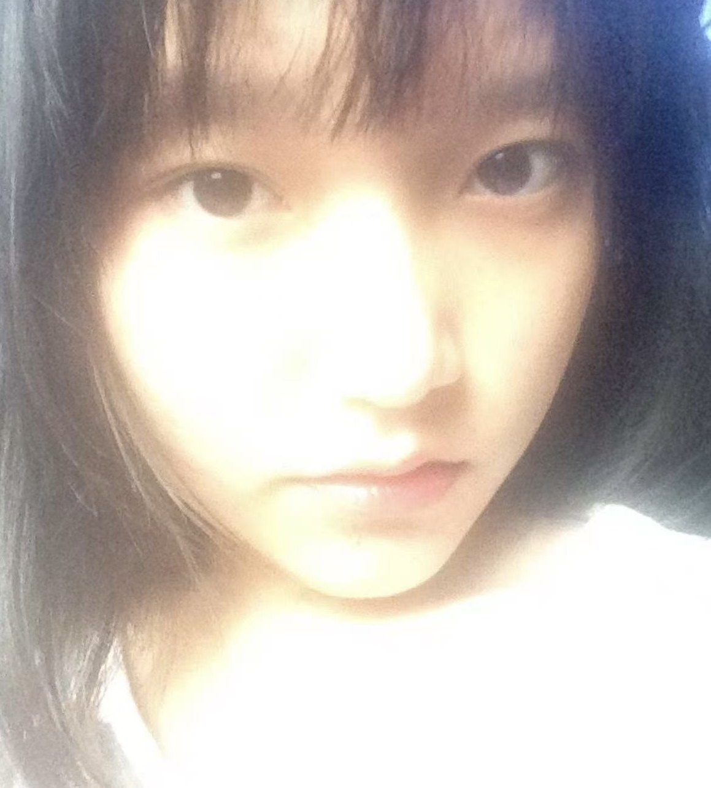

01 — 再構成
SanSan
光の粒から、もう一度きみを。
Rebuilt from light, one grain at a time.
INITIALIZING
写真に触れると、光の粒が見える
hover or touch the photo to see her in light
02 — 手紙 / LETTER
一万枚の写真の中で、いつもこの一枚に戻ってしまう。光が全部をかき消しても、君の瞳だけは澄んでいる。君を好きになるって、きっとそういうこと。雑音が消えて、君だけが残る。
Out of 10,797 photos, I keep coming back to this one. The light washes almost everything out — and yet your eyes stay perfectly clear. That's what loving you feels like: the noise fades, and it's just you.
03 — 時間 / TIME
∞days together
一緒にいた日々
一緒にいた日々
04 — 最後に / LAST
I love you, SanSan. ずっと。